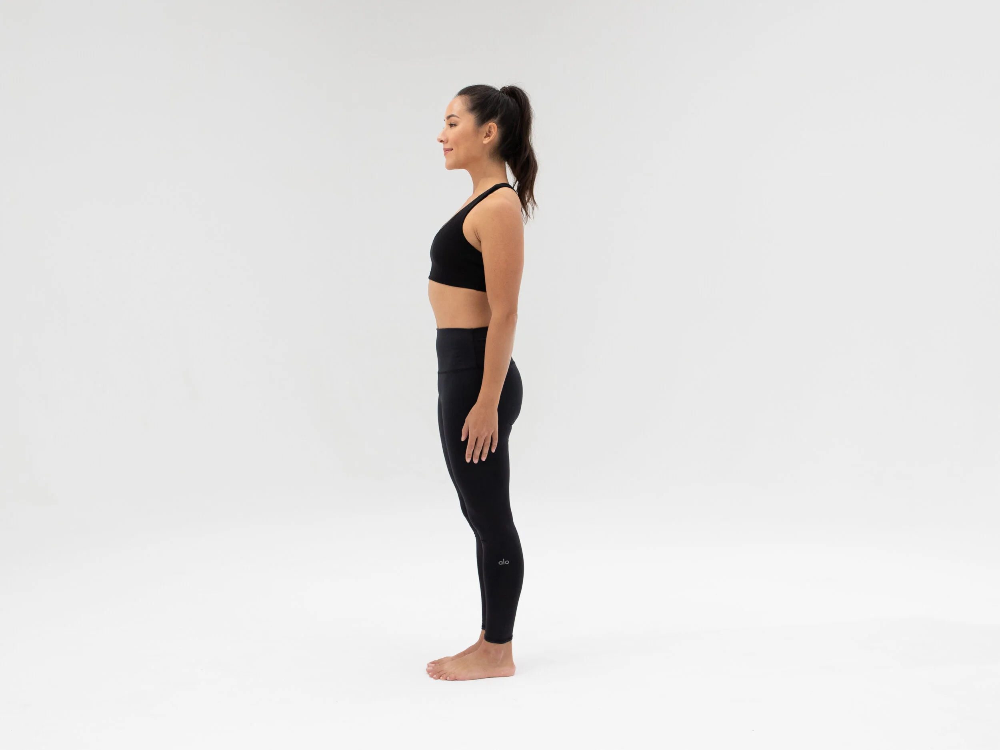
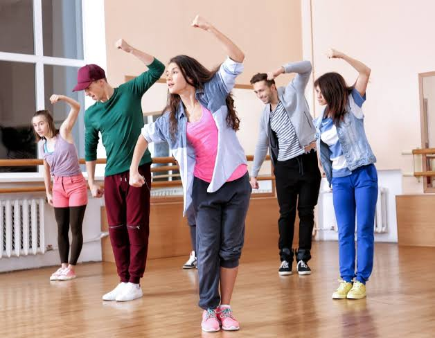
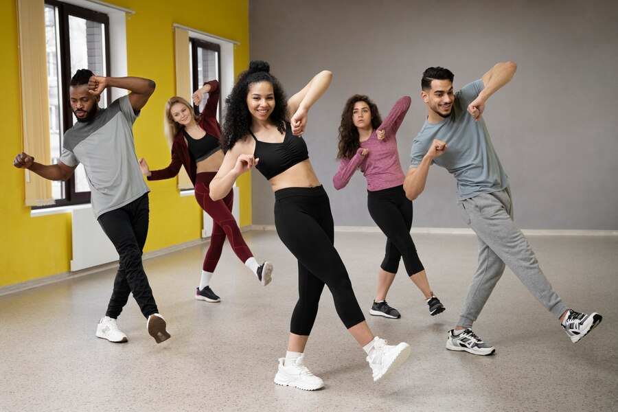
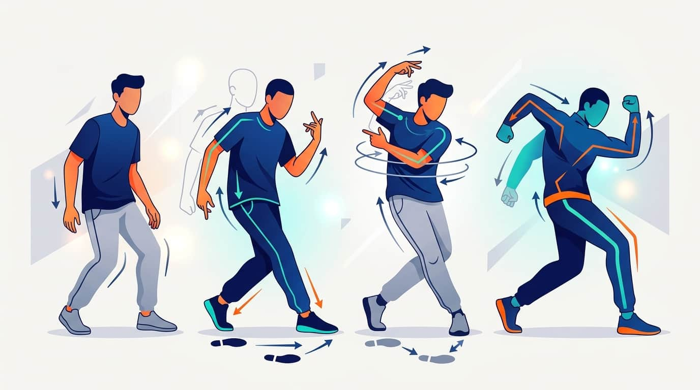
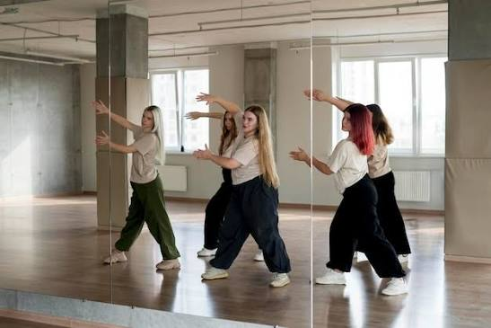

MOVEQUEST
Loading your experience...
Loading your experience...
Learn the rhythm. Follow the pattern. Clap as one!
ARSC Claps are a fun and meaningful part of ARSC activities. They bring members together through synchronized clapping patterns, rhythm, movements, and energy. Each clap requires you to listen carefully, follow the correct timing, and perform the pattern together with others.
ARSC, or the Augustinian Recollect Stewards Congregation, is a community that brings together young people and members who are inspired to live by the values and spirituality of the Augustinian Recollects. It encourages its members to grow in faith, love, friendship, unity, service, and responsibility.
ARSC helps young people become active participants in the community while sharing their talents and spreading joy through meaningful activities.
ARSC Claps are a fun and meaningful part of ARSC activities. They bring members together through synchronized clapping patterns, rhythm, movements, and energy. Each clap requires you to listen carefully, follow the correct timing, and perform the pattern together with others.
Through MOVEQUEST, you can learn ARSC claps step by step. Each lesson will demonstrate the correct clapping pattern, rhythm, timing, and movements. You can watch the demonstration, practice slowly, repeat the pattern, and eventually perform the complete ARSC clap with confidence.
Tap the play button to hear how each clap phrase sounds. Practice along and master every pattern!

"A.R YOUTH LET'S UNITE ARSC YES!"
English
"KABATAAN MAGKAISA ARSC SULONG!"
Tagalog
"SAI CHI SAI CHI WA ARSC SICHI!"
Chinese
"VAMONOS JOVENES ARSC VAMOS!"
Spanish
"NOMENASAN GAMBARIMASHO ARSC HAI!"
Japanese
"ARLOS JOVENER VAMOUR AYUNIR ARSC SI!"
French"KABATAN-UNAN MAGKAHI-USA ARSC LARGA!"
Bisaya"ALA EH KABATAAN PUMARINE ARSC ALA EH!"
Batangueño"MGA WATA ENGKAPYA ARSC OWEY!"
Muslim"MGA BATA MAGKAURUSA ARSC USWAG!"
Waray
"OB-OBENG AGMAYMAYSA ARSC APANEN!"
Ilokano"BUGTITINAE TARABIDAN ARSC AMOS TEREN!"
Cuyonin"MGA BATAN-ON MGA HILIUSA ARSC PADAYON!"
Ilonggo